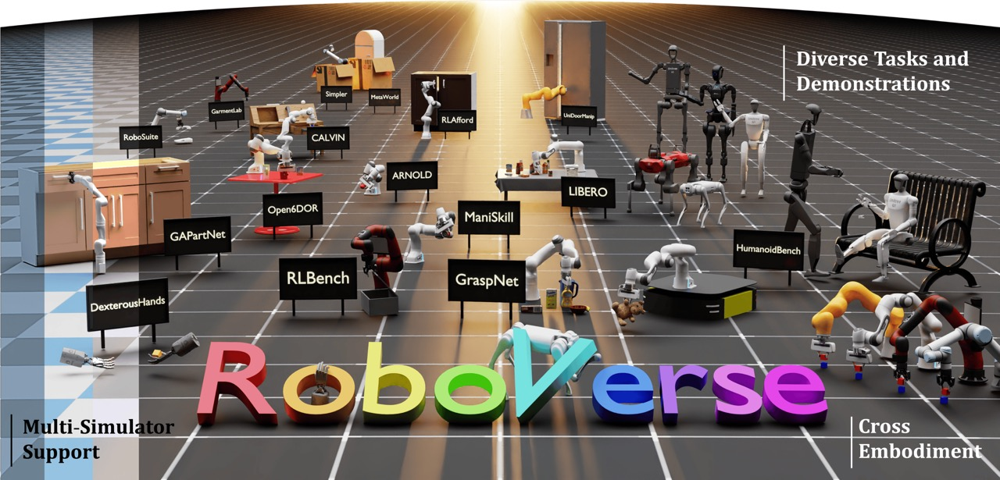

Research
I'm interested in Robotics, Reinforcement Learning, 3D Vision and Computational Photography. My ultimate goal is to contribute toward the development of general-purpose agents that can understand and interact with the real world.
|

|
RoboVerse: Towards a Unified Platform, Dataset and Benchmark for Scalable and Generalizable Robot Learning
Haoran Geng*,
Feishi Wang*,
Songlin Wei*,
Yuyang Li*,
Bangjun Wang*,
Boshi An*,
Charlie Tianyue Cheng*,
Dylan Goetting,
Chaoyi Xu,
Haozhe Chen,
Yuxi Qian,
Yiran Geng,
Jiageng Mao,
Weikang Wan,
Mingtong Zhang,
Jiangran Lyu,
Siheng Zhao,
Jiazhao Zhang,
Jialiang Zhang,
Chengyang Zhao,
Haoran Lu,
Yufei Ding,
Ran Gong,
Yuran Wang,
Yuxuan Kuang,
Ruihai Wu,
Baoxiong Jia,
Carlo Sferrazza,
Hao Dong,
Siyuan Huang,
Koushil Sreenath,
Yue Wang†,
Jitendra Malik†,
Pieter Abbeel†
preprint, 2025
Paper /
Project /
Code
We propose RoboVerse, a comprehensive framework for advancing robotics through a simulation platform, synthetic dataset, and unified benchmarks. Its MetaSim infrastructure abstracts diverse simulators into a universal interface, ensuring interoperability and extensibility. RoboVerse improves sim-to-real transfer and enables consistent evaluation for imitation and reinforcement learning, addressing key challenges in scaling robotic data and benchmarking.
|
Selected Honors and Awards
2023: Outstanding Graduate of Peking University
2023: Outstanding Graduate of Universities and Colleges in Beijing (Summa cum laude, top 5% in Peking University)
|
Teaching
Teaching Assistant, Introduction to Computer System, Fall 2021
Teaching Assistant, Design and Analysis of Algorithms, Spring 2021
Teaching Assistant, Introduction to Computer System, Fall 2022
|
Thanks Jon Barron for this amazing template.
Last updated: Apr. 8, 2025
|
{kind=link}